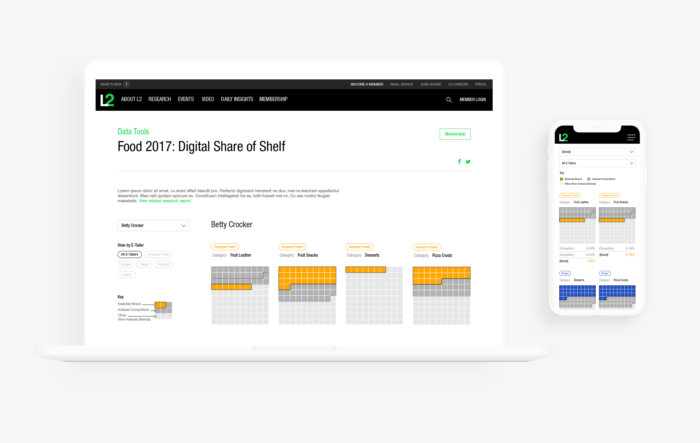

Minh-Anh Nguyen
Digital share of shelf data tool
Overview
I redesigned an interactive that L2 put out for their CPG clients, which determined how much digital “shelf space” brands take up. Our clients frequently use this data to calibrate their investments in online retailers.
Collaborators
Wright Rickman (development)
Bill Duffy (research)
Nicolas Bureau (research)
What I did
Data visualization
Collaborators
Wright Rickman (development)
Bill Duffy (research)
Nicolas Bureau (research)
What I did
Data visualization
before
A previous interactive based on similarly structured data was released prior to me joining L2.
I used this as a starting point to familiarize myself with the different elements of the data set: within a retailer's website, brands could take up a certain percentage of search results for terms related to a category (such as “air care”). The percentage was termed “digital share of shelf.” Here, the percentage was represented by both bubble size and y-position.
In my redesign, I wanted to create something that would provide a clearer mental model for the idea of “share of shelf.”
In my redesign, I wanted to create something that would provide a clearer mental model for the idea of “share of shelf.”
unit iterations
First, I explored as many ways as possible to display the data on a "shelf" level. During this part of the process, I aimed for volume in ideas, pushing myself to delay judgment on my ideas.
Exploration of different displays for the data at the "shelf" level.
As I sifted through my sketches, the question of the hour was: What visual metaphor connects the most with the idea of ‘share of shelf’? How do I communicate this while accommodating the eccentricities of the data?
structure iteration
Ultimately, the team and I felt the waffle chart was the best fit for the nature of the data set. I then explored different ways that a user might be able to navigate between different “shelves”, asking myself: who is our user, what are they looking for, and what comparisons are important to them?

A small sampling of different explorations in layout, color, and information hierarchy left on the cutting room floor.
The final product
In the final product, we chose to go with a brand-centric interface, privileging our client base. Strokes and hover states help draw the distinction between a brand and its competitors, eliminating the need to come up with a different color for each of the many, many brands in our data set. The interactive condenses to a two-column layout on a mobile screen.
See the final data tool here. This design was reused for other L2 CPG research reports throughout 2018.

See the final data tool here. This design was reused for other L2 CPG research reports throughout 2018.
What I'm Taking into Future Work
Understanding the methodology is hugely important to data visualization. Despite not having any background in the subject area, I approach the dataset as if I were deeply invested in online big-box retailers and curious of what the methodology entailed. Although many of the finer details of the methodology were simplified in the final interactive, having an understanding of the research was important in deciding what information to include or leave out.
Ask the right questions during collaborative projects. It was eye-opening for me, fresh out of design school, to be working on a project with many diverse perspectives. However, I also realized how important it was to help orient others to the audience-centric view that I have as a designer—I needed to ask researchers what parts of the methodology they thought would be the most helpful to clients. Explicitly pointing out this shift in mindset helped facilitate a successful collaborative process, leading to success in the end.
Ask the right questions during collaborative projects. It was eye-opening for me, fresh out of design school, to be working on a project with many diverse perspectives. However, I also realized how important it was to help orient others to the audience-centric view that I have as a designer—I needed to ask researchers what parts of the methodology they thought would be the most helpful to clients. Explicitly pointing out this shift in mindset helped facilitate a successful collaborative process, leading to success in the end.